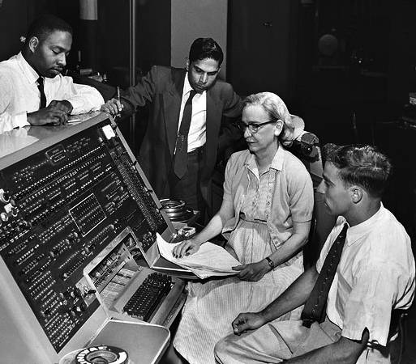

Ada Lovelace: La primera programadora
Tradujo del francés al inglés el manual de la famosa máquina analítica de Charles Babbage, y agregó unas notas en las que planteaba la idea de una máquina universal programable (en un tiempo que no existían los lenguajes de programación). En sus notas escribió algoritmos, definiendo las subrutinas, las condicionales y los bucles recursivos para calcular los números de Bernoulli, todo en papel.
Grace Hopper: El primer compilador de la historia
|
un siglo después de su muerte, es creado el primer compilador (es decir, un programa que traduce lenguaje de programación, a lenguaje de máquina o binario) y lo hizo también una mujer. En los años 40 las computadoras eran electromecánicas y para poder programarlas en lenguaje binario o ensamblador, se utilizaban cables e interruptores. En esta época fue cuando Grace Hopper escribió el primer libro de programación: un manual de instrucciones para programar el Mark I. Más adelante trabajando en la UNIVAC (otra de las primeras computadoras comerciales),le planteó a su equipo que las computadoras deberían poder programarse en inglés. Sus compañeros durante 3 años pero ella no se rindió. Así que, cansada de tener que programar en el tedioso lenguaje ensamblador creó FLOW-MATIC, el primer compilador. Su logro fue un verdadero hito para la informática, tanto así que luego estuvo en los comités que crearon los primeros lenguajes de programación: Fortran y COBOL. |
 |
Dennis Ritchie: El creador de UNIX y del lenguaje C
Diseñó el primer sistema operativo de la hisoria. Al poco tiempo de entrar a los Bell Labs en la década de los 60 le asignaron trabajar junto a Ken Thompson en el desarrollo del Sistema Operativo MULTICS, pero este S.O. les resultó demasiado complicado, y muy pesado. Más tarde encontrarían una computadora PDP-7 en la que comenzaron a construir un S.O. multiplataforma desde cero. Así nació UNIX (Uniplexed Information and Computing System).
Creó el lenguaje C de programación
Para estar a la altura del nuevo sistema, Thompson creó el lenguaje B, pero necesitaba muchas mejoras.
Más adelante, B fue reemplazado por el superpoderoso C, que fue creado por Ritchie. C le dio a UNIX más flexibilidad y
permitió que se instalara en múltiples plataformas. C no será el primer lenguaje de programación, pero de él descienden
prácticamente todos los lenguajes de la actualidad.
Bill Gates: El creador de la industria del Software
Aproximadamente 10 años después de la creación de UNIX, aún se subestimaba el poder del Software; se veía como un producto necesario, pero secundario frente al Hardware. Pero esto cambió por completo en 1975 cuando Bill Gates y Paul Allen crean el lenguaje Altair BASIC para el Altair 8800, el primer computador personal. Sí, Bill Gates estaba obsesionado con la programación, y gracias a ese nivel de pasión es que en el 74 cuando Paul Allen le mostró la portada del Popular Electronics donde aparecía el Altair 8800, tuvo una revelación y se puso a escribir (junto a Paul Allen y otro amigo) el sistema Altair Basic en apenas 3 meses. Ese fue solo el comienzo, porque más adelante fundó Microsoft. Sus creaciones impulsaron el florecimiento de la computación moderna, ¡y todo comenzó con un adolescente obsesionado con la programación!
Tim Berners-Lee: El creador de la Web
Tim Berners-Lee podría ser el único pionero del que casi nadie oído hablar, pero utilizamos sus inventos todos los días.
En el año 1984, Berners-Lee estaba frustrado mientras trabajaba como investigador en el CERN
(Organización Europea para la Investigación Nuclear), porque los métodos para compartir información eran demasiado engorrosos.
Aquí fue cuando a él se le ocurrió la idea de que los documentos se conectasen unos con otros.A esa conexión le llamó hipervínculo o
hipertexto, el famoso “link”, la base de toda la web.
Pero faltaba algo, un elemento necesario para crear documentos que contuvieran enlaces.
Así creó un lenguaje de marcado, al que llamó HTML (HyperText Markup Language).
Pero aún le faltaba algo, ya tenía los hipervínculos,
y un lenguaje que hacía que los documentos se conectasen mediante esos hipervínculos,
pero faltaba una manera de conectar esos documentos en la red.Por eso creó el protocolo HTTP,
que son una serie de instrucciones que permiten conectar documentos a través de la red de Internet.
Así se veía el primer sitio web.
HTTP+HTML = ¡WWW!
Así nació la World Wide Web .
Unos años después aparece Mosaic, el primer navegador web; Para el año 2000 la web se convierte en una auténtica revolución.
Hoy la web es una de las revoluciones más grandes de la tecnología y comenzó con Tim Berners-Lee frustrado porque no podía
compartir información